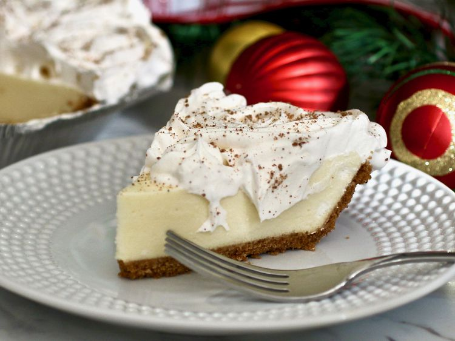

Eggnog Pie
Home

Description
A Bavarian cream pie made with homemade eggnog that can be
made in the microwave or on a stove top. The pre-baked pie
crust can be substituted by a graham cracker.
Ingredients
- 1 (.25 ounce) package unflavored gelatin
- 1/4 cup cold water
- 1 cup milk
- 1/2 cup white sugar
- 2 eggs, lightly beaten
- 1/4 cup rum
- 1 cup whipping cream
- 1/4 pinch white sugar
- 1 (9 inch) pie shell, baked
- 1/2 teaspoon ground nutmeg
Steps
-
In a small bowl, combine gelatin and cold water; set
aside to soften. Combine milk and 1/2 cup sugar in a
small glass bowl. Microwave for 3 minutes or until milk
begins to boil.
-
In a steady stream, pour hot milk into beaten eggs,
whisking constantly. Cook custard in the microwave,
whisking after each minute, until it thickens slightly,
about 2 minutes. Stir in softened gelatin and mix until
melted. Stir in rum.
-
Let filling cool to room temperature. (If you refrigerate
it, stir occasionally to prevent gelatin from setting too
soon.)
-
In a medium bowl, whip cream until soft peaks form;
beat in 1/4 cup sugar.
-
Set aside 1/2 cup of whipped cream for garnish; keep
refrigerated. Fold remaining whipped cream into eggnog
mixture. Pour filling into pie crust and refrigerate 4
hours or overnight.
-
Garnish with reserved whipped cream and a dusting of
nutmeg.